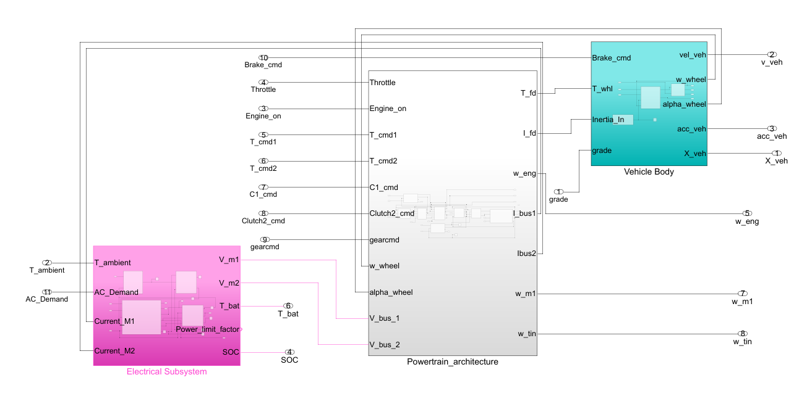
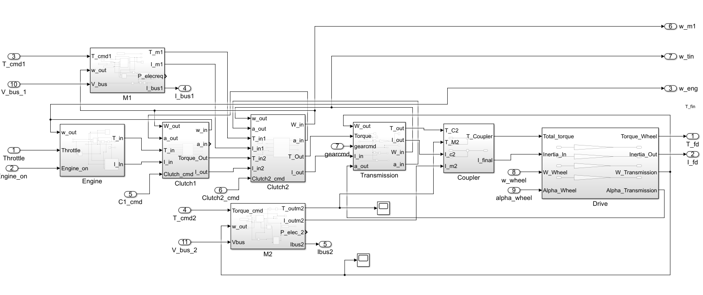
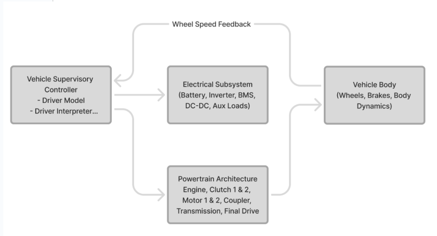
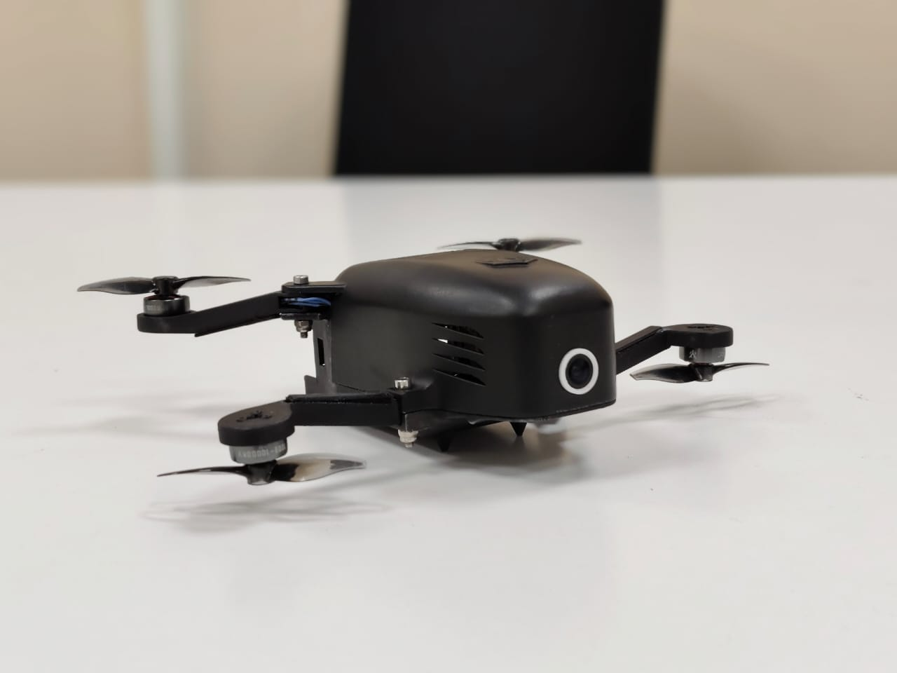
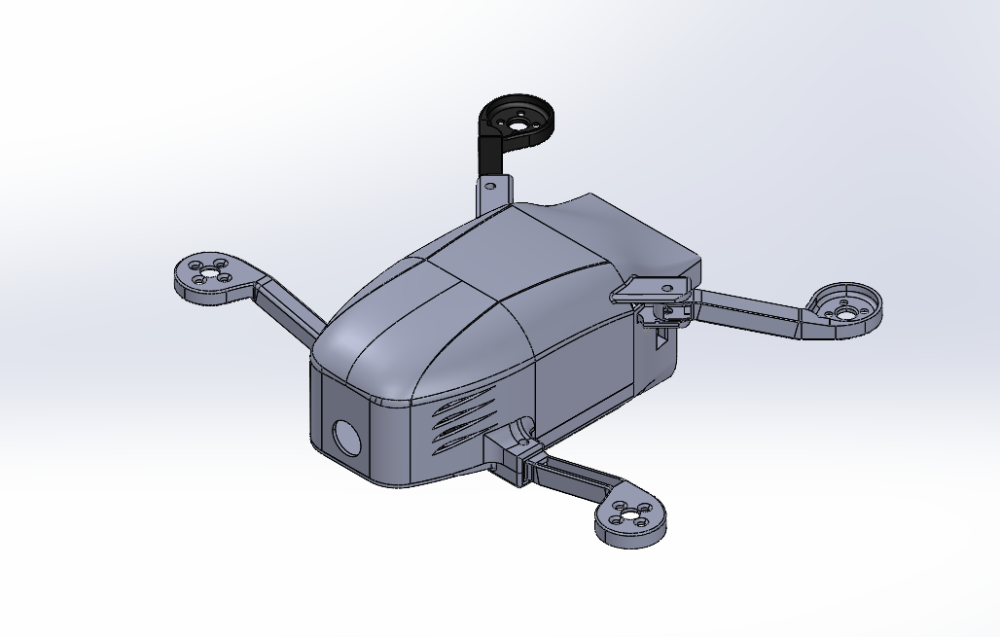
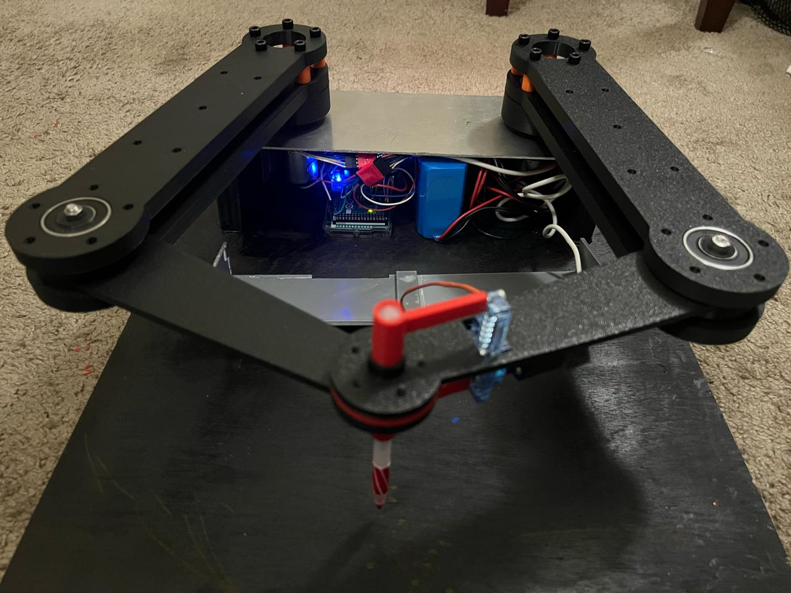
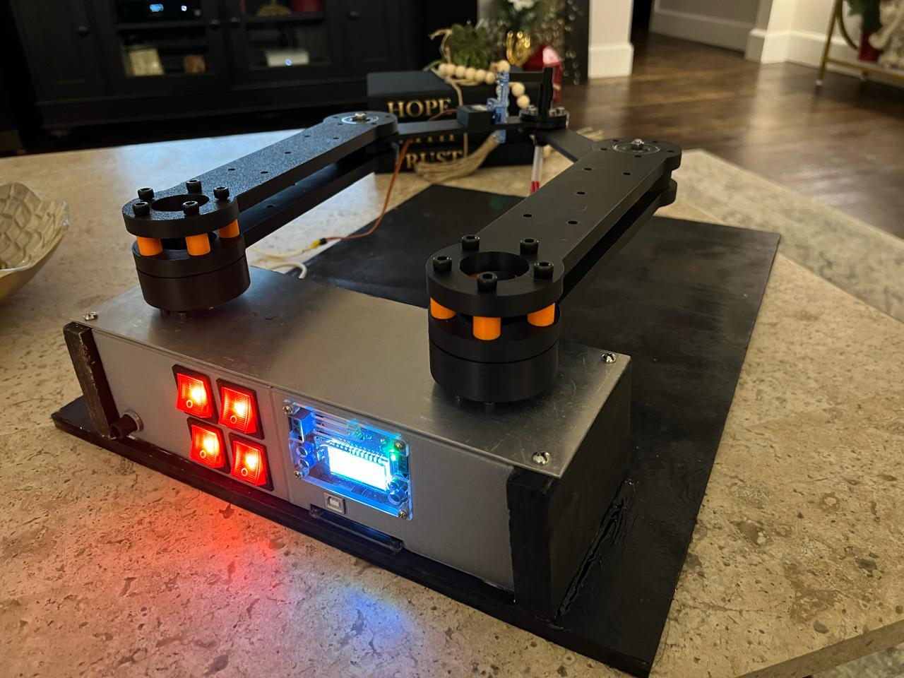
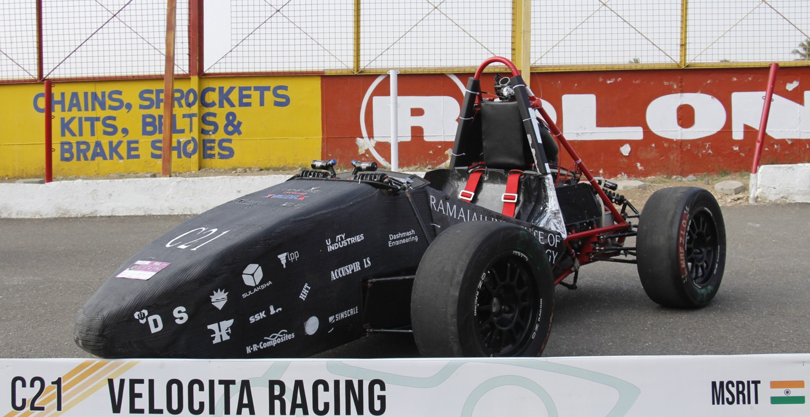
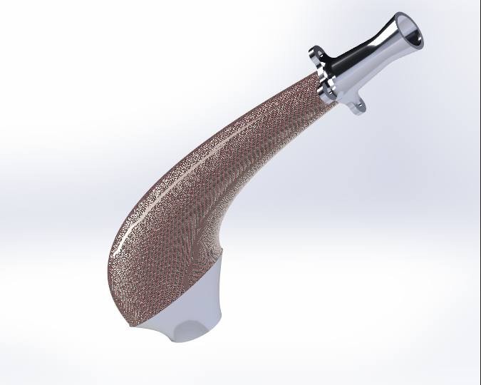
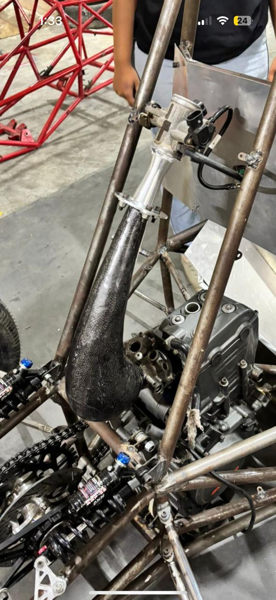

Projects
Selected Work
01
Full-Scale Autonomous Vehicle — Lincoln MKZ
CAST Lab · Texas A&M · 2025–Present
Challenge
Take a stock Lincoln MKZ and make it drive itself — from mechanical sensor mounting and drive-by-wire hardware integration, all the way through a ROS2/NAV2 software autonomy stack running in Docker.
Approach
Designed custom SolidWorks mounting assemblies for LiDAR, stereo cameras, IMU, and RTK-GPS with ±1 mm alignment tolerances and vibration isolation. Integrated drive-by-wire ECUs with vehicle actuators. Built a multi-sensor fusion pipeline (EKF) and a custom NAV2 global planner plugin from scratch in C++. Ran V&V tests correlating HIL simulation with physical vehicle response.
Outcome
Achieved <50 ms actuator response latency. Autonomous navigation goals executed with the car moving 22+ meters on planned paths. Root-caused localization drift and actuator lag through structured failure analysis.
<50ms
Actuator Latency
22m+
Autonomous Path
±1mm
Mount Tolerance


02
Parallel Hybrid EV Powertrain Modeling
CAST Lab · MATLAB/Simulink · 2025–Present
Challenge
Build a physics-based plant model of a 12-ton parallel hybrid electric vehicle — diesel engine, dual electric motors, battery management, and thermal subsystems — to validate supervisory control strategies before hardware deployment.
Approach
Modeled each subsystem using manufacturer-supplied hardware data. Implemented both causal and acausal (Simscape) modeling approaches. Built Stateflow-based supervisory control logic for mode transitions. Validated the complete powertrain under multiple standard drive cycles (UDDS, HWFET, US06).
Outcome
Complete P2 hybrid configuration model capturing battery voltages, internal resistance, and thermal saturation limits. Control strategies validated against drive-cycle energy targets.
12-ton
Vehicle Class
2+1
Motor + Engine Config
3
Drive Cycles Tested



03
Nano Drone Development
ARTPark · India · 2024–2025
Challenge
Design a sub-200g nano-drone platform from scratch — mechanical airframe, avionics integration, battery module validation — all under extreme spatial, weight, and thermal constraints.
Approach
Created modular airframe CAD in SolidWorks/Onshape with GD&T callouts. Designed 18650 Li-ion battery modules with capacity grading and internal resistance matching (±5 mΩ). Tested 15+ battery configurations measuring discharge curves and thermal performance. Ran FEA for structural validation and CFD for airflow optimization. Integrated avionics, power electronics, and sensor suites with custom interfaces validated under shock, vibration, and thermal cycling.
Outcome
Delivered field-deployable nano-drone platform. Corrective actions from root-cause analysis on cell failures improved pack longevity. Engineering documentation (BOMs, ICDs, assembly procedures) enabled cross-team handoff.
<200g
Total Weight
15+
Battery Configs
±5mΩ
Resistance Matching


04
5-DOF SCARA Drawing Robot
Academic Project · MATLAB · Mechatronics
Challenge
Build a 5-arm SCARA robot capable of precise drawing — the key difficulty being mechanical backlash in linkages and encoder noise that introduce disturbances into the control loop.
Approach
Computed optimum link lengths for the workspace envelope. Wrote backlash compensation code and tuned PID controllers to reject disturbances from mechanical play and encoder quantization. Iterated between simulation and hardware testing.
Outcome
Achieved smooth, accurate drawing with minimized trajectory error. Demonstrated closed-loop control robustness under real mechanical imperfections.


05
On-Orbit Refuelling Mechanism
ISRO (ISITE) · Bengaluru · 2023 · Images under confidentiality
Challenge
Design a probe-and-drogue fuel transfer mechanism for satellite servicing — enabling on-orbit refueling to extend spacecraft operational life. Must meet stringent dimensional tolerances for docking alignment.
Approach
Developed mechanical concepts in Siemens NX with tolerance analysis per ASME GD&T standards. Integrated electronic and sensor suites for monitoring docking status. Built FDM prototypes to validate assembly sequence and mechanical fit before hardware release.
Outcome
Presented findings in a technical report at a national aerospace conference. Prototype validated assembly feasibility and operational sequence.
06
FSAE — Powertrain, DAQ & Leadership
Velocita Racing · Team Captain · 2021–2024
Challenge
Lead a 50+ member Formula Student team through the full design-manufacture-test cycle — while personally owning the air intake package, data acquisition system, and powertrain test infrastructure.
Approach
Designed an integrated filter–restrictor–plenum air intake package optimized via Ansys Fluent CFD, fabricated with carbon fiber layup. Built a 12-channel DAQ system (strain gauges, gyroscopes, thermal sensors) processed through a custom Simulink model for suspension travel and tire load analysis. Designed powertrain dyno test fixtures. Managed cross-functional execution, secured industrial sponsorship.
Outcome
DAQ data directly drove the next-iteration suspension geometry redesign. Top of Class 2021–22 and 2022–23. Presented experimental results at a national aerospace conference.
50+
Team Members
12
DAQ Channels
3 yrs
Leadership


